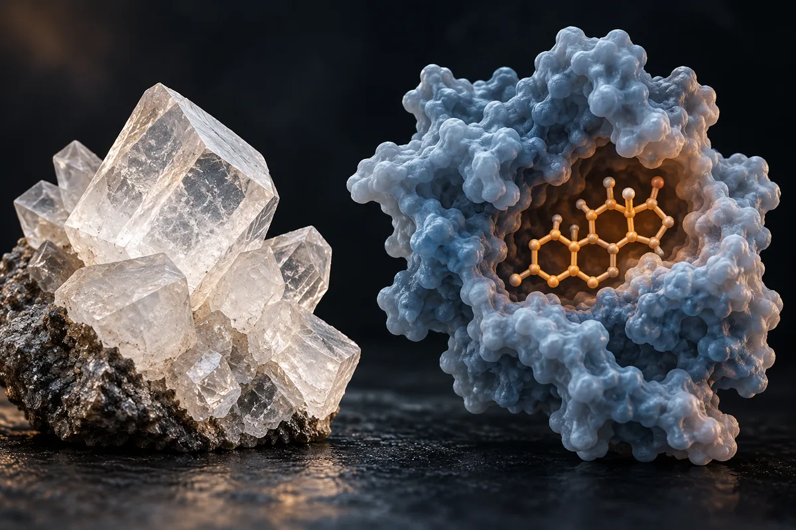

Boro (SHBG e testosterona livre)
O "+28% de testosterona livre" é atribuído a um estudo de 8 homens sem grupo placebo; no Brasil, 10 mg por dia passa do máximo permitido em suplemento.

Material experimental. Leia antes de usar qualquer coisa daqui.
Nada nesta página é recomendação médica, prescrição ou plano de tratamento. É uma tradução organizada de protocolos que circulam em comunidades de pesquisa e, quando existe, do que ensaios publicados testaram. As duas coisas estão marcadas de forma diferente — e não são equivalentes.
A maior parte dos compostos aqui não tem aprovação da ANVISA nem da FDA para uso humano. Vários são vendidos com rótulo de "uso exclusivo em pesquisa", o que significa que não passaram por controle de pureza, esterilidade ou dosagem para consumo por pessoas. Dose descrita por comunidade não é dose validada: é o que alguém relatou ter feito.
Converse com um profissional de saúde habilitado antes de considerar qualquer um destes compostos. Se você já usa algum e sentir algo fora do previsto, procure atendimento — não espere o próximo exame de rotina.
Resumo
O boro é um oligoelemento que a autoridade europeia classifica como não essencial. A alegação de que ele derruba a SHBG e sobe a testosterona livre se apoia num estudo iraniano de 2011 com 8 homens, 10 mg por dia por uma semana e sem grupo placebo paralelo. Os dois artigos com placebo em homens, com 2,5 mg por dia por 7 semanas, não acharam efeito na testosterona. Um estudo de 1997 com 10 mg por dia por 4 semanas viu o estradiol subir, não cair. No Brasil, o máximo em suplemento para adultos é 8,866 mg por dia, e boro em suplemento não é autorizado para gestantes, lactantes, crianças e adolescentes.
Por que esta página existe
O boro aparece descrito em vídeos curtos sobre saúde masculina que vi publicados na internet, como um mineral "de centavos" que solta a testosterona "acorrentada" no sangue. A promessa mais repetida é a mesma em quase todos: 10 mg por dia por 7 dias, testosterona livre +28% e estradiol −39%. Em volta dela circulam outras: formas "de alta absorção", um "condutor iônico" que teria sido tirado da água, uma cronologia de 30 dias que termina com ossos "blindados", e a garantia de que é "totalmente seguro".
Levantei as alegações de 15 vídeos curtos, separei as 21 que são verificáveis e procurei cada estudo citado e cada número. Nenhum número desta página veio da fonte secundária do site.
O boro é um elemento presente em frutas, verduras, castanhas e leguminosas. Segundo as revisões de Nielsen (2008 e 2014), estudos de privação em animais e em pessoas sugerem que ingestões abaixo de 1 mg por dia prejudicam osso, função cerebral e resposta imune, e a recomendação desse autor é comer mais desses alimentos. A autoridade europeia de segurança alimentar classifica o boro como não essencial: segundo o documento do Instituto Federal Alemão de Avaliação de Risco (BfR), nenhuma função fisiológica específica foi identificada em humanos ou animais superiores, e não há valor de referência de ingestão. Em suplemento, o boro aparece como tetraborato de sódio (bórax), ácido bórico, frutoborato de cálcio, citrato, "glicinato" ou "quelato".
A SHBG é hipótese, não mecanismo demonstrado
A SHBG é a globulina que transporta a testosterona e o estradiol no sangue. Pela chamada hipótese do hormônio livre, só a fração solta age nos tecidos. Uma revisão de 2017 da Endocrine Reviews lembra que essa hipótese é "extensamente debatida" e que os modelos usados para calcular quanto da testosterona está presa à SHBG e à albumina provavelmente estão errados. Isso já enfraquece a imagem da testosterona "acorrentada" que só um mineral libertaria.
O dado humano que liga boro e SHBG é um só. No estudo de Naghii e colegas (2011), a SHBG caiu 6 horas depois da primeira cápsula de 10 mg, em 8 homens. Depois de uma semana, a testosterona livre média subiu e o estradiol médio caiu. Não houve grupo placebo paralelo: o "placebo" foi o próprio dia anterior à primeira dose, nos mesmos 8 homens.
O mecanismo continua sendo proposta. Um artigo de 2018 na Medical Hypotheses sugere que o ácido bórico desacople os hormônios da SHBG, e os próprios autores pedem estudos para confirmar. Nielsen (2014) propõe outro caminho, a formação de ésteres de boro com moléculas biológicas. Nenhum dos dois foi demonstrado em ensaio humano.
E os outros dados apontam em direções diferentes. Com a mesma dose de 10 mg por dia, mas por 4 semanas, Naghii e Samman (1997) viram o estradiol subir de 51,9 para 73,9 pmol/L em homens saudáveis. Com 2,5 mg por dia por 7 semanas, dois artigos com fisiculturistas e grupo placebo não acharam efeito na testosterona total nem na livre. Em mulheres na pós-menopausa, 3 mg por dia elevaram estradiol e testosterona num estudo de 1987 e não mudaram nada numa repetição de 1993.
Quanta evidência existe, de verdade
Os números abaixo foram levantados por mim em 16 de outubro de 2026, no PubMed e no ClinicalTrials.gov. A consulta de cada linha está ao lado do número, para qualquer pessoa repetir e me contradizer.
| Base | Consulta | Resultado |
|---|---|---|
| PubMed | boron | 54.153 artigos |
| PubMed | (boron) AND (testosterone) | 59 artigos |
| PubMed | (boron[Title/Abstract]) AND (testosterone[Title/Abstract]) AND (humans[MeSH Terms]) | 20 artigos |
| PubMed | (boron) AND (testosterone) AND (Randomized Controlled Trial[Publication Type] OR Meta-Analysis[Publication Type]) | 2 artigos |
| PubMed | (boron) AND ("sex hormone-binding globulin") | 3 artigos |
| PubMed | (boron[Title/Abstract]) AND (supplementation[Title/Abstract] OR supplement[Title/Abstract] OR dietary[Title/Abstract]) AND (Randomized Controlled Trial[Publication Type] OR Meta-Analysis[Publication Type]) | 20 artigos |
| PubMed | boron glycinate | 3 artigos |
| PubMed | fructoborate | 48 artigos |
| PubMed | (boron) AND (ashwagandha OR Withania) | 0 artigos |
| ClinicalTrials.gov | intervenção: boron | 985 estudos registrados |
| ClinicalTrials.gov | intervenção: boron NOT bortezomib NOT ixazomib | 49 estudos registrados |
| ClinicalTrials.gov | intervenção: (boron) AND AREA[Phase]PHASE3 | 133 ensaios de fase 3 |
| ClinicalTrials.gov | intervenção: boron AND AREA[BasicSearch]testosterone | 0 estudos registrados |
| ClinicalTrials.gov | intervenção: calcium fructoborate | 1 estudo registrado |
Leitura honesta desses números
- Os números grandes são de outra coisa. No PubMed, boron pega química de materiais, radioterapia por captura de nêutrons e remédios que contêm boro. No ClinicalTrials.gov, os 985 registros e os 133 de fase 3 são, em sua maioria, de bortezomibe, um quimioterápico com boro na molécula. Tirando bortezomibe e ixazomibe, sobram 49; nos que li, aparecem radioterapia com boro, gel e ácido bórico de uso local, dietas e poucos suplementos orais. Numa busca só por formas de suplemento e ácido bórico, quase tudo é de uso local (vaginal, no ouvido, nos olhos, na boca).
- Boro e testosterona: 2 artigos marcados como ensaio randomizado, os dois sem efeito. São os artigos de Ferrando e Green (1993) e Green e Ferrando (1994), com 2,5 mg por dia. O estudo de 2011 que sustenta o "+28%" não tem marcação de ensaio randomizado no PubMed.
- Nenhum ensaio registrado de boro mede testosterona. A busca combinada no ClinicalTrials.gov devolve zero.
- O "glicinato de boro" não existe na literatura biomédica. Os 3 artigos da busca são de química orgânica.
- Boro com ashwagandha: zero artigos. Nenhum estudo testou a combinação que circula.
- Contagem de artigo mede atenção acadêmica, não evidência de desfecho.
Os estudos que sustentam as alegações
Segundo o PubMed, estes são os trabalhos clínicos concretos por trás do que se diz sobre o boro e os hormônios. Leia o que cada um mediu, e em quantas pessoas.
| Estudo | N | Contexto | O que relatou | Ressalva |
|---|---|---|---|---|
| Naghii et al., 2011 J Trace Elem Med Biol 25(1):54-8 · PMID 21129941 | 8 | Homens saudáveis; placebo no dia 0, depois 10 mg/dia de boro por 7 dias; centro de fisiologia do esporte de uma universidade de ciências médicas de Teerã | Em 6 h, SHBG, PCR ultrassensível e TNF-α caíram; em 7 dias, testosterona livre média subiu e estradiol médio caiu; DHT, cortisol e vitamina D subiram | Sem grupo placebo paralelo; uma semana; o resumo não traz os percentuais +28% e −39% |
| Naghii e Samman, 1997 Biol Trace Elem Res 56(3):273-86 · PMID 9197924 | 18 na parte de excreção | Homens saudáveis; 10 mg/dia por 4 semanas | 84% da dose saiu na urina; estradiol subiu de 51,9 para 73,9 pmol/L (p < 0,004); testosterona com "tendência" de alta; lipídios sem mudança | O estradiol subiu, ao contrário do que se promete |
| Ferrando e Green, 1993 Int J Sport Nutr 3(2):140-9 · PMID 8508192 | 19 | Fisiculturistas de 20 a 27 anos; 2,5 mg/dia (10) ou placebo (9), 7 semanas | Boro no sangue subiu; nenhum efeito na testosterona total ou livre, na massa magra ou na força | Dose de 2,5 mg, não 10 mg |
| Green e Ferrando, 1994 Environ Health Perspect 102 Suppl 7:73-7 · PMID 7889885 | 19 | Mesmo desenho: 10 com boro 2,5 mg/dia, 9 com placebo, 7 semanas | "O suplemento de boro não afetou essas variáveis de modo algum" | Mesmos autores, mesmo N, mesma dose e duração do artigo de 1993 |
| Nielsen et al., 1987 FASEB J 1(5):394-7 · PMID 3678698 | 12 | Mulheres de 48 a 82 anos em unidade metabólica; dieta com ~0,25 mg/dia e depois 3 mg/dia de boro | Menos cálcio e magnésio na urina; estradiol e testosterona séricos subiram | Mulheres na pós-menopausa; duração do suplemento não está no resumo |
| Beattie e Peace, 1993 Br J Nutr 69(3):871-84 · PMID 8329361 | não informado no resumo | Mulheres na pós-menopausa; dieta com 0,33 mg/dia por 3 semanas e +3 mg/dia por mais 3 | Nenhum efeito em minerais, hormônios esteroides ou marcadores de osso | Tentativa de repetir o estudo de 1987 |
| Wallace et al., 2002 Eur J Clin Nutr 56(11):1102-7 · PMID 12428176 | 15 | Homens de 45 a 65 anos; 11,6 mg de boro em dose única, como tetraborato de sódio; randomizado, duplo-cego, cruzado | Boro no sangue subiu; nenhum efeito em glicose, insulina, lipídios ou coagulação | Dose única; financiado por um produtor de bórax |
| Penland, 1994 Environ Health Perspect 102 Suppl 7:65-72 · PMID 7889884 | 3 estudos | Idosos saudáveis; dieta com ~0,25 contra ~3,25 mg de boro por 2.000 kcal/dia | Com pouco boro, mais atividade lenta no eletroencefalograma (2 de 3 estudos) e pior atenção e memória (p < 0,05) | Compara dieta pobre com dieta comum, não suplemento acima da dieta |
| Duydu et al., 2018 Arch Toxicol 92(10):3051-3059 · PMID 30143848 | 212 | Trabalhadores de indústria de boro; grupo de exposição extrema com média de 47,17 mg de boro por dia | Nenhum efeito em sêmen, FSH, LH ou testosterona total | Estudo observacional; os autores defendem rebaixar a classificação europeia de risco |
Doses usadas em estudos humanos publicados
Isto não é recomendação de dose: é o registro do que foi administrado em estudos publicados, com a finalidade de cada um. Fora do contexto do estudo, esses números não se transferem.
| Estudo | Dose | Duração | Finalidade do estudo |
|---|---|---|---|
| Naghii et al., 2011 | 10 mg/dia de boro, cápsula | 7 dias | Hormônios esteroides e marcadores inflamatórios |
| Naghii e Samman, 1997 | 10 mg/dia | 4 semanas | Excreção urinária, lipídios e hormônios |
| Ferrando e Green, 1993; Green e Ferrando, 1994 | 2,5 mg/dia | 7 semanas | Testosterona, massa magra e força em fisiculturistas |
| Nielsen et al., 1987 | 3 mg/dia sobre dieta com ~0,25 mg/dia | Não informado no resumo | Metabolismo mineral e hormonal na pós-menopausa |
| Beattie e Peace, 1993 | 3 mg/dia sobre dieta com 0,33 mg/dia | 3 semanas | O mesmo, em repetição |
| Wallace et al., 2002 | 11,6 mg em dose única (102,6 mg de tetraborato de sódio decahidratado) | Uma refeição | Coagulação, glicose e insulina |
| Penland, 1994 | Dieta com ~0,25 ou ~3,25 mg por 2.000 kcal/dia | Não informado no resumo | Eletroencefalograma e desempenho cognitivo |
Segundo a revisão de Pizzorno (2015), em nenhum dos estudos feitos até então os efeitos benéficos do boro apareceram com ingestões acima de 3 mg por dia. A revisão de Rondanelli e colegas (2020) sobre osso também trabalha com 3 mg por dia.
Das 21 alegações, uma se confirma inteira: a de que as três "fontes" são o mesmo estudo de 8 homens
Cada linha é uma alegação como ela circula, sem o nome de quem a fez. O veredito usa seis rótulos: confirmado, parcialmente, não sustentado, sem estudo em humanos, estudo em animal ou in vitro e número não encontrado na fonte citada.
| O que se diz | O que os estudos mostram | Veredito |
|---|---|---|
| 10 mg/dia por 7 dias: testosterona livre +28% (ou +28,3%) e estradiol −39% | O estudo existe (Naghii 2011) e o resumo confirma a direção: testosterona livre subiu e estradiol caiu, em 8 homens, sem placebo paralelo. Os percentuais não estão no resumo; NÃO VERIFIQUEI no texto completo | Parcialmente |
| As fontes: "Journal of Trace Elements", "Universidade de Teerã, 2011, 8 voluntários" e "Nagui, 2011" | As três descrições batem com um único artigo: Naghii e colegas, Journal of Trace Elements in Medicine and Biology, 2011, 8 homens. A instituição é a Universidade de Ciências Médicas Baqiyatallah, em Teerã | Confirmado (é um estudo só) |
| O boro reduz ou "bloqueia" a SHBG e libera a fração livre | A SHBG caiu 6 h após a primeira dose, nos mesmos 8 homens; o mecanismo é hipótese (Bello 2018); com 2,5 mg/dia por 7 semanas, a testosterona livre não mudou | Parcialmente |
| Na forma de glicinato, +29,5% de testosterona livre em 7 dias | Não há estudo de "glicinato de boro" no PubMed | Número não encontrado na fonte citada |
| Sem um "condutor iônico" tirado da água nos anos 90, o intestino absorve só 7% do boro; boro e ashwagandha ficam "dormentes" no estômago | Com 10 mg/dia, 84% da dose saiu na urina (Naghii e Samman 1997); o boro de uma dose única de tetraborato apareceu no sangue em horas (Wallace 2002); o "condutor" não foi identificado | Não sustentado |
| "+45% de testosterona livre em 7 dias com 2 minerais"; boro e ashwagandha como "duas vias que se completam" | Nenhum estudo testou a combinação (PubMed: 0 artigos); a ashwagandha não é mineral; o número soma resultados de estudos separados | Não sustentado |
| "98% da sua testosterona está acorrentada" | A maior parte da testosterona circula ligada a proteínas, e só a fração livre age pela hipótese do hormônio livre, que é debatida (Goldman 2017). NÃO VERIFIQUEI o percentual de 98% | Parcialmente |
| 10 mg/dia contra o "teto" de 3 mg das cartilhas; "ensaios clínicos reais usam 10 mg" | Dois estudos pequenos usaram 10 mg; os outros usaram 2,5 a 3 mg; a revisão de 2015 diz que benefícios não apareceram acima de 3 mg/dia; no Brasil, 10 mg passa do máximo em suplemento | Parcialmente |
| 10 mg é a "faixa exata de segurança toxicológica" | 10 mg/dia é o limite superior europeu para a soma de comida, água e suplemento, não um alvo; o BfR sugere no máximo 0,5 mg por dose diária de suplemento; a ANVISA permite até 8,866 mg | Não sustentado |
| "Sem efeito colateral, sem receita"; "totalmente seguro" | O limite europeu foi derivado de efeito em fetos de ratas; ácido bórico e boratos são classificados na UE como tóxicos à reprodução; a ANVISA exige aviso para gestantes, lactantes e crianças | Não sustentado |
| Só boro quelato ou frutoborato de cálcio absorvem; as formas baratas e a "versão errada" não | Não localizei estudo comparando absorção entre formas. Com tetraborato de sódio, o boro apareceu no sangue em horas (Wallace 2002); com 10 mg/dia, 84% da dose saiu na urina (Naghii e Samman 1997, forma não informada no resumo); no Brasil, as fontes autorizadas são tetraborato de sódio e frutoborato de cálcio, e "quelato" ou "glicinato" não constam | Não sustentado |
| A falta de boro reduz a atividade elétrica do cérebro | Em idosos, dieta pobre em boro mudou o eletroencefalograma e piorou testes de atenção e memória (Penland 1994) | Parcialmente (vale para falta, não para suplemento acima da dieta) |
| O boro regula glicose, energia celular e função sexual | Uma dose de 11,6 mg não mudou glicose nem insulina (Wallace 2002); não localizei estudo humano sobre energia celular ou função sexual | Não sustentado |
| Deficiência de boro está associada a baixa densidade óssea, inflamação crônica e queda hormonal | Revisões de Nielsen ligam ingestão baixa a pior osso, função cerebral e resposta imune; o efeito hormonal oscila entre estudos | Parcialmente |
| 10 mg/dia por 30 dias: +28% de testosterona livre na 1ª semana, menos inflamação e alívio articular na 2ª, vitamina D "destravada" na 3ª, ossos "blindados" no dia 30 | O único estudo de cerca de 30 dias com 10 mg/dia viu estradiol subir (Naghii e Samman 1997); inflamação e vitamina D só foram medidas no dia 7, em 8 homens; o ensaio registrado de frutoborato em articulação não tem resultado; não há estudo de osso em 30 dias | Não sustentado |
| Age nos rins, reduzindo a perda de cálcio e magnésio na urina | Visto com 3 mg/dia em 12 mulheres na pós-menopausa (Nielsen 1987); não repetido em 1993; não estudado em homens nos trabalhos que li | Parcialmente |
| "Ativa" ou "destrava" a vitamina D | Vitamina D subiu em uma semana nos 8 homens de 2011; sem ensaio controlado localizado | Parcialmente |
| Pesticidas e agricultura intensiva esgotaram o boro do solo | Nenhum dos 4 artigos da busca (boron deficiency) AND (soil) AND (pesticide OR pesticides) trata disso | Não sustentado |
| ANVISA, FDA e OMS não fixaram ingestão diária recomendada | Correto que não há valor de ingestão recomendada: a tabela americana de valores diários não tem boro e a ANVISA deixa o mínimo "não estabelecido". Omite que há máximos: 8,866 mg/dia em suplemento no Brasil, 10 mg/dia na UE e 20 mg/dia de limite superior registrado numa revisão de 2015. NÃO VERIFIQUEI a posição da OMS | Parcialmente |
| Relato pessoal: o cansaço das 18 h sumiu | Relato individual; não há como conferir | Sem estudo em humanos |
| "Amostra pequena: indício forte, não veredito definitivo" | A amostra é de 8 homens, sem placebo paralelo; os dois artigos com placebo e o estudo de 4 semanas não confirmam o "indício" | Parcialmente |
Placar: 1 confirmada, 10 parcialmente, 8 não sustentadas, 1 com número não encontrado na fonte citada e 1 sem estudo em humanos.
Segurança: o número que circula como dose segura é o teto
- 10 mg por dia é limite de ingestão total, não meta. Segundo o BfR, a autoridade europeia (EFSA, 2004) fixou em 10 mg por dia o limite superior para adultos, inclusive gestantes e lactantes, somando todas as fontes. O limite saiu de estudos em animais, porque não havia dado humano adequado: em ratas prenhes, o boro reduziu o peso dos fetos. Para adolescentes de 15 a 17 anos, o limite é 9 mg; para crianças de 1 a 14 anos, de 3 a 7 mg.
- A comida e a água já podem chegar perto disso. O mesmo documento estima que, no pior cenário, com alimentos e água mineral ricos em boro, um adulto ingere cerca de 9 mg por dia sem suplemento algum. Por isso o BfR sugere no máximo 0,5 mg de boro por dose diária de suplemento e o aviso "não adequado para crianças e adolescentes".
- Há um limite superior de 20 mg por dia para quem tem 18 anos ou mais, segundo a revisão de Pizzorno (2015), que registra que não há necessidade média estimada nem ingestão de referência para o boro, só esse limite. NÃO VERIFIQUEI na fonte original qual órgão o fixou.
- Toxicidade reprodutiva em animais. Segundo o BfR, a reavaliação europeia de 2013 registrou efeito adverso no sistema reprodutor masculino de ratos, camundongos e cães alimentados com ácido bórico e bórax, e fixou ingestão diária aceitável de 0,16 mg de boro por quilo de peso, o que dá 11,2 mg para um adulto de 70 kg. Segundo Duydu e colegas (2016 e 2018), o ácido bórico e os boratos de sódio estão classificados no regulamento europeu de classificação de substâncias como tóxicos à reprodução, categoria 1B.
- Em humanos, o sinal de risco reprodutivo não apareceu. Em 212 trabalhadores da indústria de boro, com exposição média de 47,17 mg por dia no grupo mais exposto, não houve efeito em sêmen, FSH, LH ou testosterona (Duydu 2018). Os autores defendem rebaixar a classificação europeia. É estudo observacional, de outro tipo de exposição.
- O boro mexe com estradiol. Com 10 mg por dia por 4 semanas, o estradiol de homens saudáveis subiu (Naghii e Samman 1997); em mulheres na pós-menopausa, estradiol e testosterona subiram com 3 mg por dia (Nielsen 1987). Que isso importe para quem tem doença sensível a hormônio é inferência minha, sem estudo localizado.
- Rim. O boro sai quase todo pela urina: 84% da dose de 10 mg (Naghii e Samman 1997). NÃO VERIFIQUEI estudo ou recomendação de segurança em doença renal.
- Interações com remédios: NÃO VERIFIQUEI em base de interações.
- Quem não deve usar: pela regra brasileira, gestantes, lactantes, crianças e adolescentes — o suplemento com boro não é autorizado para esses grupos e o rótulo tem de dizer isso. Para doença renal e condições sensíveis a hormônio, não achei recomendação formal; o cuidado é inferência minha a partir dos dados acima.
Status regulatório
- Brasil, suplemento alimentar: o boro entrou na lista de constituintes autorizados pela IN 76, de 5 de novembro de 2020. As fontes autorizadas são o tetraborato de sódio decahidratado (desde 2020) e o frutoborato de cálcio (IN 418, de 18 de dezembro de 2025). Glicinato, citrato e "quelato" de boro não constam. O máximo por recomendação diária é 8,866 mg para maiores de 19 anos; o mínimo é "não estabelecido". Para todas as faixas até 18 anos, gestantes e lactantes, o uso é "não autorizado". O rótulo tem de trazer: "Este produto não deve ser consumido por gestantes, lactantes e crianças." Versão consolidada conferida: com alterações até a IN 470, de 16 de setembro de 2026.
- Brasil, alegação de rótulo: o boro não tem nenhuma alegação autorizada no Anexo V da IN 28/2018, e pela RDC 243/2018 (art. 16) só as alegações dessa lista podem ir ao rótulo. "Aumenta a testosterona livre" não é uma delas.
- Brasil, medicamento: nenhum medicamento oral de boro com registro ativo (tabela abaixo).
- Estados Unidos: a tabela de valores diários do rótulo (21 CFR 101.9, edição de outubro de 2026) não inclui boro. NÃO VERIFIQUEI na fonte original o limite superior de 20 mg por dia que a revisão de 2015 registra.
- União Europeia: limite superior de 10 mg por dia; boro classificado como não essencial; sem valor de referência de ingestão; o BfR sugere 0,5 mg por dose diária de suplemento. Segundo o mesmo documento, nenhuma alegação de saúde para boro foi autorizada na UE — NÃO VERIFIQUEI o registro europeu de alegações na data de hoje. Ácido bórico e boratos de sódio: tóxicos à reprodução, categoria 1B.
- OMS: NÃO VERIFIQUEI se a OMS fixou faixa de ingestão.
- WADA: o boro não aparece na Lista Proibida de 2026.
No Brasil, busquei no dado aberto de medicamentos registrados da ANVISA, no princípio ativo e no nome do produto, sem acento e sem diferença de caixa.
| Princípio ativo | Padrão buscado | Registros ativos | Classe terapêutica declarada | Produtos |
|---|---|---|---|---|
| boro | \bboro\b | 0 | — | 12 registros, todos inativos (polivitamínicos e um antisséptico de outro princípio) |
| borato de sódio, tetraborato, bórax | tetraborato|borato de sodio|\bborax | 5 | Demulcentes e outros medicamentos de uso oral para orofaringe | Um produto para boca e garganta, com anestésico local |
| ácido bórico | acido borico | 10 | Antisséptico; ginecológico anti-infeccioso tópico; medicamento para o aparelho visual | Três produtos de uso local (pó, ginecológico, colírio) |
Nenhum desses registros é de boro para tomar como suplemento. Registro de um colírio com ácido bórico não diz nada sobre cápsula de boro.
O que este levantamento não fez
- Li resumos, não os artigos inteiros. Em especial, NÃO VERIFIQUEI os percentuais +28%, +28,3% e −39% no texto completo do estudo de 2011, que não está em acesso aberto.
- Não verifiquei o "98%" de testosterona ligada a proteínas.
- Não li as fontes primárias da EFSA nem a ficha de boro dos Institutos Nacionais de Saúde dos EUA: as duas páginas recusaram o acesso. Os valores de 10 mg e de 20 mg entram atribuídos ao documento do BfR e à revisão de Pizzorno, que eu li.
- Não conferi a posição da OMS nem o registro europeu de alegações na data de hoje.
- Não avaliei interações com medicamentos nem segurança em doença renal.
- Não achei estudo de absorção comparada entre as formas de boro; procurei por frutoborato e por glicinato no PubMed.
- Não avaliei as outras substâncias que aparecem combinadas com o boro nos vídeos (ashwagandha, zinco, magnésio, vitamina D, maca, Eurycoma longifolia), salvo a busca pela combinação com ashwagandha, que devolveu zero.
Referências
- Naghii MR, Mofid M, Asgari AR, et al. Comparative effects of daily and weekly boron supplementation on plasma steroid hormones and proinflammatory cytokines. J Trace Elem Med Biol. 2011;25(1):54-8. PMID 21129941 — a origem do "+28% / −39%": 8 homens, 10 mg/dia, uma semana, sem placebo paralelo; percentuais ausentes do resumo.
- Naghii MR, Samman S. The effect of boron supplementation on its urinary excretion and selected cardiovascular risk factors in healthy male subjects. Biol Trace Elem Res. 1997;56(3):273-86. PMID 9197924 — 10 mg/dia por 4 semanas: 84% na urina e estradiol em alta.
- Ferrando AA, Green NR. The effect of boron supplementation on lean body mass, plasma testosterone levels, and strength in male bodybuilders. Int J Sport Nutr. 1993;3(2):140-9. PMID 8508192 — 2,5 mg/dia por 7 semanas com placebo: sem efeito na testosterona.
- Green NR, Ferrando AA. Plasma boron and the effects of boron supplementation in males. Environ Health Perspect. 1994;102 Suppl 7:73-7. PMID 7889885 — mesmo desenho e mesmo resultado nulo.
- Nielsen FH, Hunt CD, Mullen LM, et al. Effect of dietary boron on mineral, estrogen, and testosterone metabolism in postmenopausal women. FASEB J. 1987;1(5):394-7. PMID 3678698 — 3 mg/dia: menos cálcio e magnésio na urina, mais estradiol e testosterona, em 12 mulheres.
- Beattie JH, Peace HS. The influence of a low-boron diet and boron supplementation on bone, major mineral and sex steroid metabolism in postmenopausal women. Br J Nutr. 1993;69(3):871-84. PMID 8329361 — a repetição que não achou efeito.
- Wallace JM, Hannon-Fletcher MP, Robson PJ, et al. Boron supplementation and activated factor VII in healthy men. Eur J Clin Nutr. 2002;56(11):1102-7. PMID 12428176 — 11,6 mg em dose única sem efeito em glicose e insulina.
- Penland JG. Dietary boron, brain function, and cognitive performance. Environ Health Perspect. 1994;102 Suppl 7:65-72. PMID 7889884 — dieta pobre em boro e eletroencefalograma em idosos.
- Bello M, Guadarrama-García C, Velasco-Silveyra LM, et al. Several effects of boron are induced by uncoupling steroid hormones from their transporters in blood. Med Hypotheses. 2018;118:78-83. PMID 30037620 — o mecanismo da SHBG como hipótese.
- Goldman AL, Bhasin S, Wu FCW, et al. A Reappraisal of Testosterone's Binding in Circulation: Physiological and Clinical Implications. Endocr Rev. 2017;38(4):302-324. PMID 28673039 — a hipótese do hormônio livre é debatida e os modelos de ligação são provavelmente imprecisos.
- Nielsen FH. Is boron nutritionally relevant? Nutr Rev. 2008;66(4):183-91. PMID 18366532 — ingestão baixa e osso, cérebro e imunidade.
- Nielsen FH. Update on human health effects of boron. J Trace Elem Med Biol. 2014;28(4):383-7. PMID 25063690 — ingestão abaixo de 1 mg/dia e hipótese dos ésteres de boro.
- Pizzorno L. Nothing Boring About Boron. Integr Med (Encinitas). 2015;14(4):35-48. PMID 26770156 — benefícios não vistos acima de 3 mg/dia; limite superior de 20 mg/dia a partir de 18 anos.
- Rondanelli M, Faliva MA, Peroni G, et al. Pivotal role of boron supplementation on bone health: A narrative review. J Trace Elem Med Biol. 2020;62:126577. PMID 32540741 — osso com 3 mg/dia; limite europeu de 10 mg/dia.
- Duydu Y, Başaran N, Ustündağ A, et al. Is Boric Acid Toxic to Reproduction in Humans? Assessment of the Animal Reproductive Toxicity Data and Epidemiological Study Results. Curr Drug Deliv. 2016;13(3):324-9. PMID 26511087 — classificação europeia de toxicidade reprodutiva, categoria 1B, e a defesa de rebaixá-la.
- Duydu Y, Başaran N, Aydın S, et al. Evaluation of FSH, LH, testosterone levels and semen parameters in male boron workers under extreme exposure conditions. Arch Toxicol. 2018;92(10):3051-3059. PMID 30143848 — 212 trabalhadores sem efeito reprodutivo.
- Instituto Federal Alemão de Avaliação de Risco (BfR). Proposed maximum levels for the addition of boron to foods including food supplements — limites europeus de 10 mg/dia e de 0,16 mg/kg, origem animal, máximo sugerido de 0,5 mg por dose de suplemento.
- Instrução Normativa nº 28, de 26 de julho de 2018, da ANVISA, texto consolidado no AnvisaLegis — fontes autorizadas, máximo de 8,866 mg/dia, grupos não autorizados e advertência obrigatória do boro.
- Resolução RDC nº 243, de 26 de julho de 2018, da ANVISA, texto consolidado no AnvisaLegis — constituintes e alegações restritos às listas da IN 28/2018.
- 21 CFR 101.9 no eCFR, edição de 05/10/2026 — a tabela americana de valores diários, sem boro.
- Dado aberto de medicamentos registrados da ANVISA — a mesma base usada na página O que existe no Brasil.
- Registro NCT05438979 no ClinicalTrials.gov — o único ensaio registrado de frutoborato de cálcio, em saúde articular, situação desconhecida, sem resultado.
- Lista Proibida da WADA de 2026 (cópia mantida pela Universidade do Esporte de Colônia) — o boro não aparece.
- E-utilities do PubMed (esearch) — a base de todas as contagens de artigo desta página.
- API pública do ClinicalTrials.gov, versão 2 — a base de todas as contagens de estudo e de fase 3 desta página.